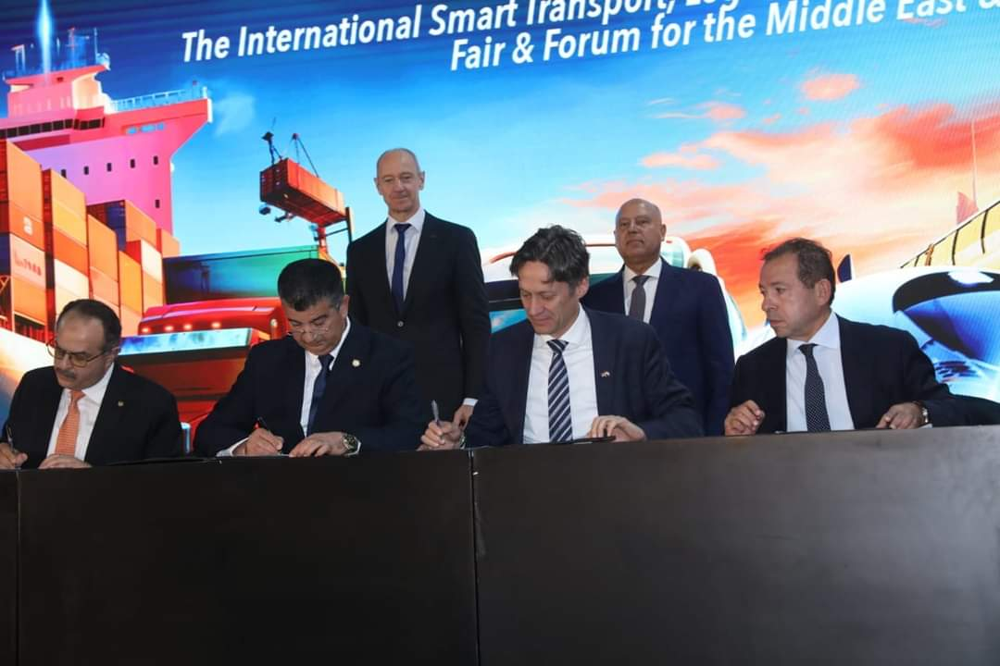
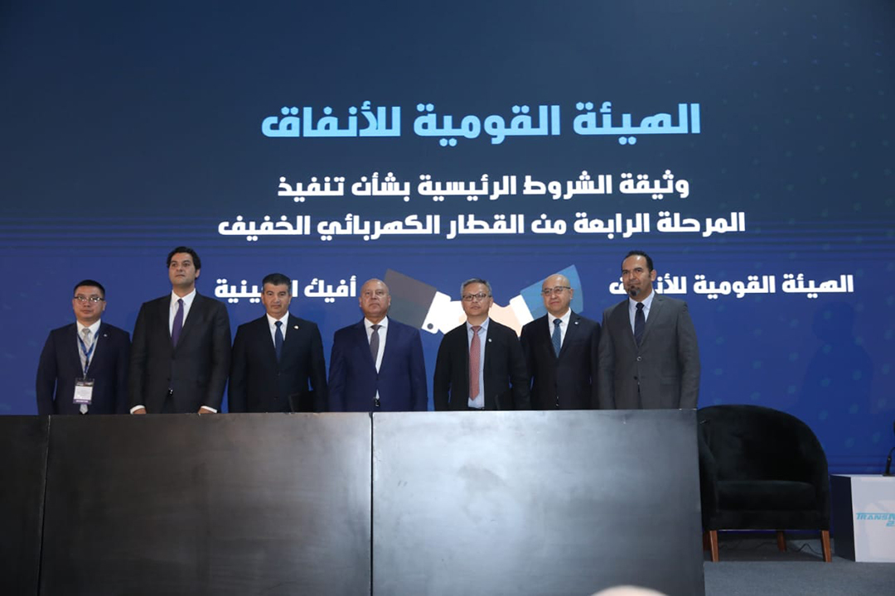
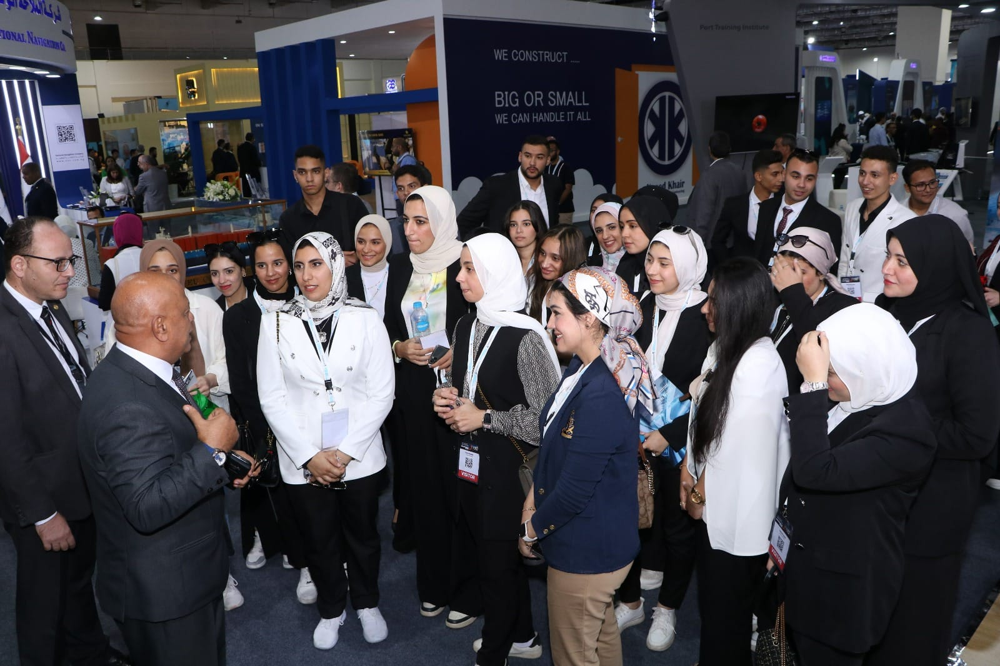

-
.jpeg)
من فعاليات اليوم الثاني للمعرض والمؤتمر الدولي للنقل الذكي والبنية التحتية واللوجيستيات للشرق الأوسط انعقاد الجلسة الحواریة حول تطویر أنظمة النقل لمواكبة المستقبل
المتحدثون: • معالي وزیر النقل الفریق كامل الوزیر – جمھوریة مصر العربیة السيد أندرو ديليون – رئيس شركة ألستوم في أفريقيا والشرق الأوسط وآسيا الوسطى
-
 على هامش فعاليات معرض ومؤتمر النقل الذكي النقل الذكي للشرق الاوسط وافريقيا TRANSMEA2023
وزير النقل يشهد توقيع عدد 4 عقود و 5 مذكرات تفاهم و 1 اتفاقية إطارية في مجال الجر الكهربائي "مترو الانفاق والقطار الكهربائي الخفيف والقطار الكهربائي السريع" بين الهيئة القومية للانفاق وتحالفات وشركات عالمية ومحلية
-

قامت الهيئة العامة لميناء الإسكندرية اليوم الإثنين الموافق 6 نوفمبر 2023 بتوقيع إتفاقية تعاون مع ميناء تشينغداو الصيني
تتضمن تبادل التعاون والخبرات في مجالات إدارة الموانئ ونظم الموانئ الخضراء والذكية وذلك على هامش فعاليات مؤتمر ومعرض النقل للشرق الأوسط وافريقيا والذي تنظمه وزارة النقل برئاسة السيد الفريق كامل الوزير وزير النقل حيث وقع الاتفاقية عن الجانب المصري السيد اللواء بحري نهاد شاهين رئيس مجلس إدارة الهيئة العامة لميناء الاسكندريه وعن الجانب الصيني السيد سو جيانغوانغ مدير عام ميناء تشينغداو وذلك بحضور قطاع النقل البحري برئاسة السيد اللواء بحري / رضا إسماعيل
-
 وزير النقل يشهد توقيع عدد 4 عقود و 5 مذكرات تفاهم و 1 اتفاقية إطارية في مجال الجر الكهربائي "مترو الانفاق والقطار الكهربائي الخفيف والقطار الكهربائي السريع" بين الهيئة القومية للانفاق وتحالفات وشركات عالمية ومحلية
على هامش فعاليات معرض ومؤتمر النقل الذكي النقل الذكي للشرق الاوسط وافريقيا TRANSMEA2023 وزير النقل يشهد توقيع عدد 4 عقود و 5 مذكرات تفاهم و 1 اتفاقية إطارية في مجال الجر الكهربائي "مترو الانفاق والقطار الكهربائي الخفيف والقطار الكهربائي السريع" بين الهيئة القومية للانفاق وتحالفات وشركات عالمية ومحلية
-
 صور متنوعة لرواد المعرض والمؤتمر الدولى للنقل الذكى والبنية التحتية واللوجيستيات للشرق الأوسط وافريقيا TransMEA2023خلال تفقد اصطفاف الوحدات المتحركة ووسائل النقل الجماعي الحديثة بالساحة الخارجية وخلال تفقد أجنحة المعرض المختلفة
…